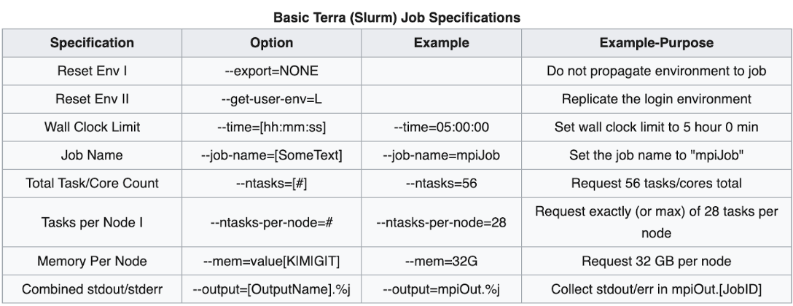

Over the last decade, A&M has made a push towards computing power. This allows cutting edge research at A&M to take place, working towards the research goals of the university. The following paper details an overview of Texas A&M's supercomputers(Terra, Grace and FASTER).
FASTER, an acronym for Fostering Accelerated Scientific Transformations, Education and Research, is a supercomputer located at Texas A&M University developed for the growing needs of higher-performance computing. This supercomputer runs on a Linux (CentOS 8) operating system and has 180 64-core compute nodes, each with 256GB of RAM. At peak performance, these specs allow the supercomputer to perform 1,200,000,000,000,000 floating-point operations per second (1.2 petaflops). The supercomputer also uses Lustre, a file system for high-performance computing, for managing up to 5,000,000 GB (5 petabytes) of storage space on the global disk.
Texas A&M, specifically the High Performance Research Computing (HPRC), has a strict policy on security to maintain its level of protection against unauthorized access, sensitive data, and the system’s integrity. Access to FASTER is only given out by the HPRC team. The HPRC team requires users wanting access to submit proposals on their research goals and computing requirements. If approved, the then authorized user is required to attend sessions where they are trained on the best system’s policies and best practices for data management and security. After this, users must have a secure password and two-factor authentication (Duo) enabled to use FASTER. All activity from the user while on FASTER is tracked by the High Performance Research Computing department.
In the overview, we briefly covered the components that make up
the FASTER supercomputer. In this subsection, we will take a
look at the entire specs of the supercomputer. Take a look at
the table below.
Courtesy of
https://hprc.tamu.edu/wiki/FASTER:Intro
At first look at the table above we can see that the supercomputer operates on Linux, specifically through the CentOS 8 distribution. Also looking at the compute nodes and composable GPUs that FASTER contains, we can see that at peak performance, FASTER will outperform Tera(377 Teraflops) but be outperformed by Grace(6.3 Petaflops).
Although some may speculate that just based on these comparisons one is always better than the other when it comes to performance. This is not the case though. FASTER, with the help of the InfiniBand network and sizable and fast storage processing speeds, is perfectly optimized for parallel simulations such as those done in material science and engineering simulations. In terms of areas where FASTER lacks due to hardware, we can see that the smaller number and power of memory and GPU can fall behind in categories relating to machine learning or scientific computing such as molecular and fluid dynamics where otherwise, Tera and Grace would shine. Therefore, it is less about comparisons of computing power and rather more about the type of resource you need for the specific task at hand.
FASTER makes use of Lustre’s file system, which is able to manage FASTER’s multiple parallel file systems. Lustre’s parallel filing system is known to provide very efficient and fast data-sharing across multiple nodes (processors). Also within each compute node on FASTER, there is a local scratch file system implemented (which is faster than Lustre). The downfall of the scratch file system is that it has limited storage and can not be shared between each node. Therefore, the main use case for the scratch file system stored on each node is for temporary data storage during simulations in progress (kind of like Random Access Memory).
When it comes to the data storage system that FASTER has in place for its large storage capacity (5 Petaflops), Hierarchical Storage Management is used. Hierarchical Storage Management is a data storage manipulation system that optimizes by placing the most frequently accessed data on the faster storage modules. On the other hand, the less frequently accessed data is placed on the slower storage modules. The reason that the Hierarchical Storage Management is great for FASTER’s infrastructure is due to not only cost efficiency but also maintaining computing efficiency.
Overall, the file system infrastructure that FASTER makes use of seems to be designed to maintain high performance across data sharing (between nodes) while working with larger data sets. The combination of all features such as the Lustre file system, the scratch file system, and the Hierarchical Storage Management work synonymously to keep storage costs efficient while not sacrificing much parallel computing capabilities in simulations requiring large data analysis pools.
FASTER allows Batch Processing through the use of Slurm, a workload manager that allows the allocation of resources to specific jobs and queuing and viewing of these jobs as well. FASTER’s Slurm is designed with multiple partitions for use cases such as general use, development use, and GPU-intensive use. The existence of a system like Slurm for batch processing in FASTER allows experienced users to manage and allocate resources from the machine's resource pool.
After researching supercomputers and FASTER in specific, I’ve learned that supercomputers require more than just large amounts of expensive hardware to be used at their full potential. Factors like the structuring of the file system architecture, batch processing, and interconnections are key components that allow the FASTER supercomputer to excel in parallel computing. The intricate designs down to assigning each node, memory, and storage module with specific use cases make the infrastructure of this system fascinating.
Grace is a Dell x86 HPC Cluster that is classified as one of Texas A&M’s Supercomputers. The machine is named after Grace Hopper, a computer scientist that invented the language COBALT. This machine contains 45,376 cores and 940 nodes to perform at its capabilities. This computer was meant to replace the machine that we had in 2014 named Ada, and this computer performs at 20 times faster than Ada. This computer can run at up to 6.3 PFLOPS, which is 6.3 * 10^15 floating point operations per second. This computer runs on Linux and uses Lustre and GPFS as its designated file systems.
To access Grace, we can use the grace.hprc.tamu.edu hostname to perform operations. Any Texas A&M Student and Faculty Member can access Grace through their respective machine’s shell. It requires a VPN to be used off campus and requires a two-factor authentication to access. This is done through the NetID and Password prompt that the university does along with a duo push to access.
Grace has 45376 cores and 940 nodes. For the login nodes, Grace
uses different GPUs. For the first, it uses an NVIDIA A100, the
second uses an NVIDIA RTX 6000, the third uses an NVIDIA T4, and
the fourth and fifth nodes do not use a GPU. The general
hardware overview is the following:
Courtesy of
https://hprc.tamu.edu/wiki/Grace:Intro#Hardware_Overview
Nodes have either 384GB or 3TB of memory, but some of the memory
is used to maintain software and such. A lot of times excessive
memory requests get rejected. The following table shows the
maximum capabilities of each node for batch processing:
Courtesy of
https://hprc.tamu.edu/wiki/Grace:Intro#Usable_Memory_for_Batch_Jobs
All in all, Grace is easy to access for students and it can be used to perform high intensity computing tasks that one would not be able to do on their personal computer. It is easy to access using the shell and is accessed the same way one would access any other resource on campus. Its crazy speed makes it efficient to perform high intensity tasks and it is a great resource for researchers with the university to be able to do their work.
Courtesy of
https://hprc.tamu.edu/wiki/Terra
Texas A&M University owns and manages the supercomputer Terra,
which has 9,632 cores and 320 nodes. It was built in the Teague
Data Center in February 2017 for a cost of about 2.1 million
dollars. The name "Terra" refers to its primary function, which
is to analyze images obtained from an Earth observation
satellite. This supercomputer, according to the university, also
aimed to boost computing power for initiatives like the creation
of new materials, the discovery of new medicines, storm
forecasting, and energy management.
The High-Performance Research Center is an open facility that allows TAMU users to access computing resources. It is illegal to use the computers in a manner that violates Export Administration Regulations policies or the policy in place by the International Trafficking in Arms Regulations.
The HPRC upholds specific rules for data storage in order to store data effectively and safely. For starters, files used on the particular server are stored on disk. The directories are not meant for long-term archival. Staff members occasionally have the ability to delete files to reduce processing loads when file quotas are reached. There is no backup of any external files.
Access to Terra is heavily monitored to ensure fair and safe usage. Secure shells are used to access Terra and two factor authentication is needed in order to gain access.
Terra is a supercomputer with 320 compute nodes, totaling 9,632 total cores. It runs on Linux (CentOS 7) and has a peak performance of 377 TFLOPs, meaning it can run 377 trillion floating point operations per second. An overview of the hardware can be seen below:
Terra uses a batch system to ensure fair use for computing resources. By using this system, users can reserve resources without having any impact on other users.The attempt to get around the batch system is a violation of policies stated in section 1.2. Below is the basics of Slurm, which is enough information to run your own Batch process on Terra:
Once you have created the job, you may submit it using the following command:
MyJob.slurm
Although batches are great for ensuring that everyone gets to use Terra in a fair manner. Limitations are set in place for large jobs to only get a specific amount of time to run. This means that large jobs may not get to finish in one go. Therefore, there is a need for Checkpointing. Checkpointing basically aims to save the current progress of the job, so if it is interrupted, there is an ability to resume at any point. The ability to save right before the end of the job is the most used example of checkpointing, however, users technically have the ability to save manually as well.
Terra is a supercomputer that allows for speedy computing of large jobs. Although it is currently slower than other supercomputers on the A&M Campus, it is still used by many organizations that need it. The HPRC upholds policies and software that ensure that users get a fair and efficient service, allowing users to perform ground breaking research.
_lowres_v1.png){kind=link}